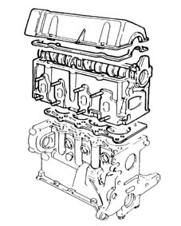
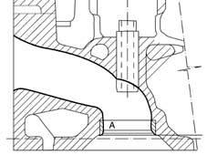
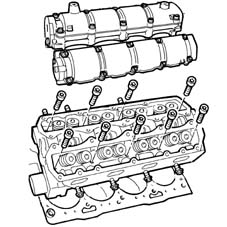
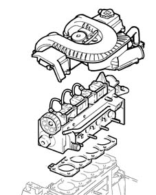
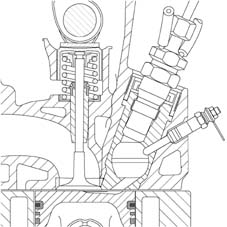
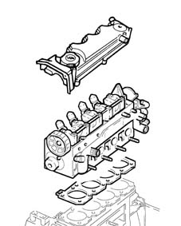

Introduction - CYLINDER HEAD/S
- Path
- Descriptions > 10 ENGINE > 1016 CYLINDER HEAD/S > Introduction - CYLINDER HEAD/S
- Kind
- system description
- Applies to
- engines: 1.2 8v, 1.6 16v, 1.3 JTD 16V, 1.9 JTD 8V, 1.9 DIESEL; all production periods; only with equipment: BIPOWER
- Interactive page
- https://sloeber94.github.io/elrnDB-fDbl/en/#/2585384
Applies to: engines: 1.2 8v; all production periods
The cylinder head is the monolithic type made from aluminium alloy. The two valves per cylinder are mounted in their respective guides, operated by a camshaft via mechanical tappets and adjustment shims.
The valve guides are installed by interference fit in their seats in the cylinder head.
The inner diameter is finished off after assembly, using a specific reamer.
The cylinder head gasket is of the Aramide fibre type, and there is no need to retighten the cylinder head at all during the life of the engine.

DESCRIPTION
The cylinder head is the top part of the engine, secured by bolts (or studs) to the engine block.
It is of determining importance for the characteristics of a propulsion unit, on which performance, consumption and polluting emissions depend.
Together with the piston crown, it determines the shape of the combustion chambers.
It houses the valves, in nearly all engines, and the entire timing gear.
The following elements make up the cylinder head:
- camshaft
- camshaft bearings
- tappets
- lubrication pipe
- inlet and exhaust valves
- valve guides
- valve seats
- tappet cover
- studs for fixing exhaust and inlet manifolds
The head contains:
- inlet ducts (with Venturi pipe shaped profile) (1)
- exhaust ducts; valve seats
- coolant ducts
- lubricant ducts; threaded spark plug seats
- the holes for attachment to the engine block, and the combustion chambers.

The head is the component which closes the cylinder; it contains the combustion chambers, where the air-fuel mixture is compressed and ignited; very high temperatures are reached here. For this reason aluminium alloys are used in the construction of cylinder heads as they are light, resistant to compression and have high termal conductivity properties.
The use of this material makes it possible to increase the compression ratio, moving away from the detonation point, because the heat is dissipated more rapidly away from the hot spots.
Applies to: engines: 1.6 16v; all production periods
The cylinder head is the monolithic type made from aluminium alloy.
The four valves per cylinder are mounted in their respective guides, operated by two camshafts via hydraulic tappets.
The valve guides are installed by interference fit in their seats in the cylinder head.
The inner diameter is finished off after assembly, using a specific reamer.
The cylinder head gasket is of the Aramide fibre type, and there is no need to retighten the cylinder head at all during the life of the engine.

Applies to: engines: 1.9 DIESEL; all production periods
The cylinder head is of aluminium and silicon alloy.
The two valves per cylinder, parallel and vertical, are fitted in the valve guides and are operated by a single overhead camshaft with cams acting on mechanical type tappets.
The valve guides are an interference fit in the cylinder head seats and the internal diameter is corrected, after fitting, using a special reamer.
The high swirl combustion prechambers (RICARDO) have been designed:
- To reduce rough operation typical of diesel engines
- To optimise fuel mixture with air.
- To guarantee reduced emissions.
The gasket between the cylinder head and the cylinder block/crankcase is the multilayer metal type and there is no need to retighten the cylinder head for the entire life of the engine.
The tappet cover, made from a damping material, is designed to carry out the function of an engine oil vapour separator.

Specifications
This type of spherical prechamber, known also as a high turbulence prechamber, allows the air mass to swirl and pull through diesel sprayed by an injector on the prechamber to make the mixture more even and aid combustion.
Current developments
Unlike conventional bottom inserted prechambers, the RICARDO prechamber is designed specifically for the FMA engine line (engines built at Pratola Serra). Although the prechamber is TOP INSERTED (inserted from the top of the cylinder head), the machining centre lines on the cylinder head remain unchanged as on current engines.
System features
Adoption of this type of RICARDO prechamber allows this engine to meet emission limits imposed by EC STAGE 3 regulations:
- reduce fuel consumption compared with current prechamber engines;
- develop considerable torque at low speeds because combustion is more efficient due to the higher swirl generated by the prechamber;
- increase acoustic comfort due to the special type of smooth combustion offered by the RICARDO prechamber.

Applies to: engines: 1.9 JTD 8V; all production periods
The cylinder head is of aluminium and silicon alloy.
The two valves per cylinder, parallel and vertical, are fitted in the valve guides and are operated by a single overhead camshaft with cams acting on mechanical type tappets.
The valve guides are an interference fit in the cylinder head seats and the internal diameter is corrected, after fitting, using a special reamer.
Compared with heads with ante-chambers, the entire combustion process takes place in the combustion chamber in the piston.
The cylinder head gasket is of the multilayer metal type, and there is no need to retighten the cylinder head at all during the life of the engine.
The plastic cam cover also acts as an engine oil vapour separator.

Applies to: engines: 1.6 16v; all production periods; only with equipment: BIPOWER
The cylinder head is the aluminium alloy, monolith type with the same specifications as the cylinder head for petrol fuel systems with the exception of the exhaust valve seats made from a special material to prevent oxidation by the methane combustion products.
The four valves per cylinder are mounted in their respective guides, operated by two camshafts via hydraulic tappets.
The valve guides are installed by interference fit in their seats in the cylinder head.
The inner diameter is finished off after assembly, using a specific reamer.
The camshafts are fitted in two integral camshaft housings, without a tappet cover.
The cylinder head gasket is of the Aramide fibre type, and there is no need to retighten the cylinder head at all during the life of the engine.